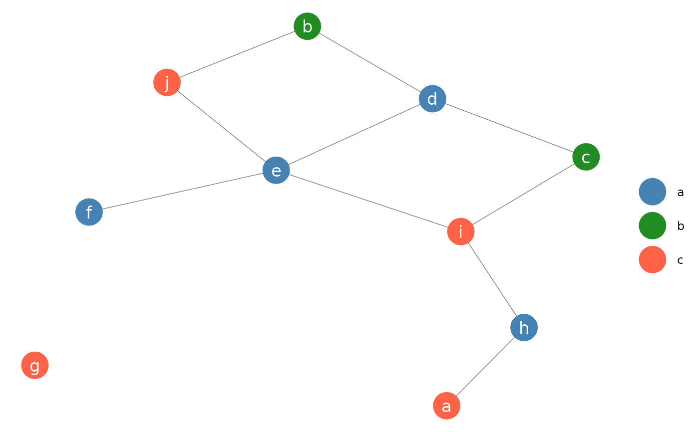

Function for plotting network objects using ggplot2, now replaced by the
ggnet2 function, which provides additional control over
plotting parameters. Please visit http://github.com/briatte/ggnet for
the latest version of ggnet2, and https://briatte.github.io/ggnet for a
vignette that contains many examples and explanations.
ggnet( net, mode = "fruchtermanreingold", layout.par = NULL, layout.exp = 0, size = 9, alpha = 1, weight = "none", weight.legend = NA, weight.method = weight, weight.min = NA, weight.max = NA, weight.cut = FALSE, group = NULL, group.legend = NA, node.group = group, node.color = NULL, node.alpha = alpha, segment.alpha = alpha, segment.color = "grey50", segment.label = NULL, segment.size = 0.25, arrow.size = 0, arrow.gap = 0, arrow.type = "closed", label = FALSE, label.nodes = label, label.size = size/2, label.trim = FALSE, legend.size = 9, legend.position = "right", names = c("", ""), quantize.weights = FALSE, subset.threshold = 0, top8.nodes = FALSE, trim.labels = FALSE, ... )
Arguments
| net | an object of class |
|---|---|
| mode | a placement method from those provided in the
|
| layout.par | options to be passed to the placement method, as listed in
gplot.layout.
Defaults to |
| layout.exp | a multiplier to expand the horizontal axis if node labels
get clipped: see expand_range for details.
Defaults to |
| size | size of the network nodes. If the nodes are weighted, their area is proportionally scaled up to the size set by |
| alpha | a level of transparency for nodes, vertices and arrows.
Defaults to |
| weight | the weighting method for the nodes, which might be a vertex
attribute or a vector of size values. Also accepts |
| weight.legend | the name to assign to the legend created by
|
| weight.method | see |
| weight.min | whether to subset the network to nodes with a minimum size,
based on the values of |
| weight.max | whether to subset the network to nodes with a maximum size,
based on the values of |
| weight.cut | whether to cut the size of the nodes into a certain number
of quantiles. Accepts |
| group | the groups of the nodes, either as a vector of values or as a
vertex attribute. If set to |
| group.legend | the name to assign to the legend created by
|
| node.group | see |
| node.color | a vector of character strings to color the nodes with,
holding as many colors as there are levels in |
| node.alpha | transparency of the nodes. Inherits from |
| segment.alpha | the level of transparency of the edges.
Defaults to |
| segment.color | the color of the edges, as a color value, a vector of
color values, or as an edge attribute containing color values.
Defaults to |
| segment.label | the labels to plot at the middle of the edges, as a
single value, a vector of values, or as an edge attribute.
Defaults to |
| segment.size | the size of the edges, in points, as a single numeric
value, a vector of values, or as an edge attribute.
Defaults to |
| arrow.size | the size of the arrows for directed network edges, in
points. See |
| arrow.gap | a setting aimed at improving the display of edge arrows by
plotting slightly shorter edges. Accepts any value between |
| arrow.type | the type of the arrows for directed network edges. See
|
| label | whether to label the nodes. If set to |
| label.nodes | see |
| label.size | the size of the node labels, in points, as a numeric value,
a vector of numeric values, or as a vertex attribute containing numeric
values.
Defaults to |
| label.trim | whether to apply some trimming to the node labels. Accepts
any function that can process a character vector, or a strictly positive
numeric value, in which case the labels are trimmed to a fixed-length
substring of that length: see |
| legend.size | the size of the legend symbols and text, in points.
Defaults to |
| legend.position | the location of the plot legend(s). Accepts all
|
| names | deprecated: see |
| quantize.weights | deprecated: see |
| subset.threshold | deprecated: see |
| top8.nodes | deprecated: this functionality was experimental and has
been removed entirely from |
| trim.labels | deprecated: see |
| ... | other arguments passed to the |
Details
The degree centrality measures that can be produced through the
weight argument will take the directedness of the network into account,
but will be unweighted. To compute weighted network measures, see the
tnet package by Tore Opsahl (help("tnet", package = "tnet")).
See also
ggnet2 in this package,
gplot in the sna package, and
plot.network in the network
package
Author
Moritz Marbach and Francois Briatte, with help from Heike Hoffmann, Pedro Jordano and Ming-Yu Liu
Examples
library(network)#> #> #> #> #> #> #> #> #># random adjacency matrix x <- 10 ndyads <- x * (x - 1) density <- x / ndyads m <- matrix(0, nrow = x, ncol = x) dimnames(m) <- list(letters[ 1:x ], letters[ 1:x ]) m[ row(m) != col(m) ] <- runif(ndyads) < density m#> a b c d e f g h i j #> a 0 1 1 0 0 0 1 1 0 0 #> b 1 0 0 0 0 0 0 0 0 0 #> c 0 0 0 0 0 0 0 0 0 0 #> d 0 0 0 0 0 1 0 0 0 0 #> e 0 0 0 0 0 0 0 0 0 0 #> f 0 0 0 0 0 0 0 1 0 0 #> g 0 0 0 0 0 0 0 0 0 1 #> h 0 0 0 0 0 0 0 0 0 0 #> i 0 0 0 0 0 0 0 0 0 0 #> j 0 0 0 0 0 0 0 0 0 0#> Network attributes: #> vertices = 10 #> directed = FALSE #> hyper = FALSE #> loops = FALSE #> multiple = FALSE #> bipartite = FALSE #> total edges= 7 #> missing edges= 0 #> non-missing edges= 7 #> #> Vertex attribute names: #> vertex.names #> #> No edge attributesggnet(n, label = TRUE, alpha = 1, color = "white", segment.color = "black")#> [1] "a" "c" "a" "b" "a" "c" "c" "a" "b" "a"# color palette p <- c("a" = "steelblue", "b" = "forestgreen", "c" = "tomato") ggnet(n, node.group = g, node.color = p, label = TRUE, color = "white")# edge arrows on a directed network ggnet(network(m, directed = TRUE), arrow.gap = 0.05, arrow.size = 10)#> Warning: Removed 1 rows containing missing values (geom_segment).